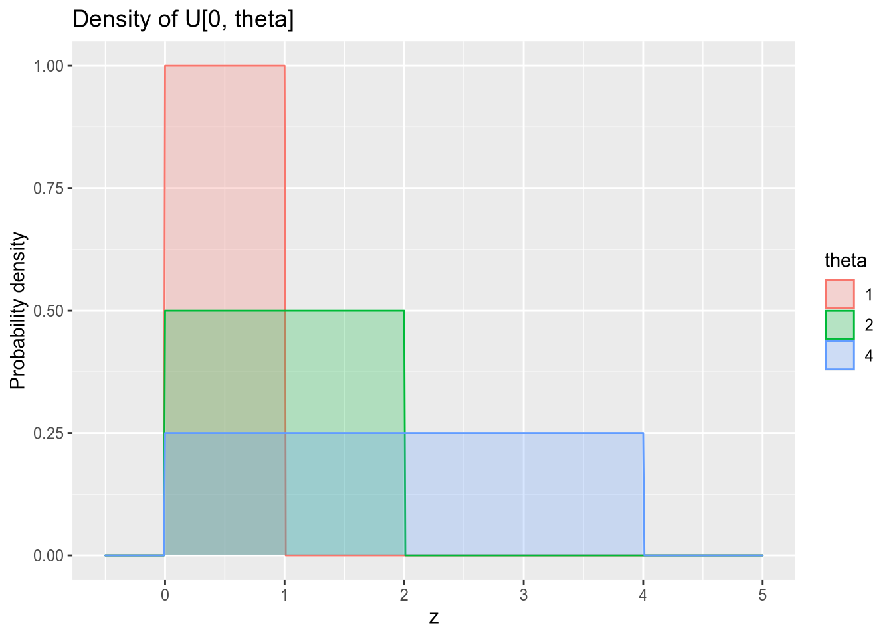
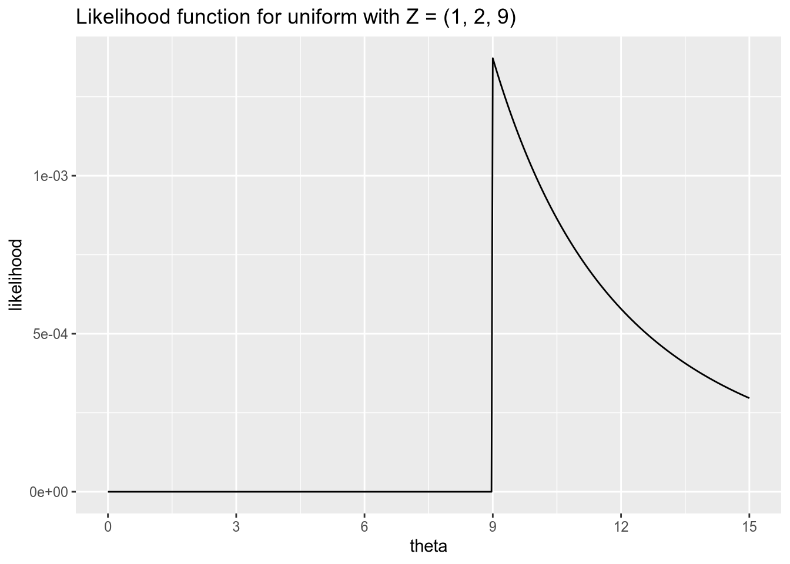

13 Binary Response Models
Many of the political phenomena we’d like to explain are dichotomous:
Whether someone votes.
Whether someones votes for a particular candidate.
Whether war occurs.
For a long time, the conventional wisdom among political scientists was that special statistical models were required to analyze binary responses like these. In this section of the course, we’ll discuss the reasoning behind this claim, work with the fancier statistical models that are purportedly necessary for binary responses, and discuss why the conventional wisdom about linear models might be wrong.
13.1 The Linear Probability Model
So far when encountering binary responses, we have just modeled them as linear functions of covariates. For example, think of voting for Trump as a function of the years of education one has received: \[ \text{Trump}_n = \beta_0 + \beta_1 \text{Education}_n + \epsilon_n. \] In this model, \(\beta_0\) represents the probability that someone with zero years of education would vote for Trump, and \(\beta_1\) is the marginal effect of an additional year of education.
Suppose we yielded the following estimates from this model: \[ \text{Trump}_n = 1.4 - 0.075 \text{Education}_n + \epsilon_n. \] Most Americans have between 8 and 16 years of formal education. According to this regression equation, we should expect about 80% of those with only an eighth-grade education to vote for Trump, while we should expect only 20% of those with a college degree to vote for Trump. These sound like reasonable numbers!
The problem is, not every American’s educational attainment lies within this range. Some Americans only have four years of formal education, and this model would predict that 110% of them voted for Trump. Other Americans are crazy enough to pursue 20+ years of education, and this model would predict that –10% or fewer of them voted for Trump.
This illustrates one problem with linear probability models: they can produce impossible predicted probabilities, outside the \([0, 1]\) range that all probabilities must lie within. In practice, such predictions usually occur for observations far away from the central tendency of the data. (In fact, as you proved on a previous problem set, the predicted probability for an observation with an average value of all covariates must equal the sample proportion of 1s in the response.)
We can see this problem in action when we draw the OLS line through the scatterplot of some (hypothetical) data on educational attainment and vote choice.

Another way to put all this is that the assumption of constant marginal effects doesn’t make sense for a binary response. If someone already has a 99% chance of voting for Trump, the most you could possibly raise their chance of voting for him is 1%. This puts a cap on the magnitude of the effect of any given variable. An intervention that raises an average voter’s chance of voting for Trump by 5% cannot possibly have the same effect on our hypothetical Trump die-hard. This is in contrast to settings with continuous outcomes. A job training program that raises an average person’s annual earnings by 2% is unlikely to have the same effect on Jeff Bezos, but it is at least conceivable it would do so.
The idea behind logistic regression (and its close friend probit regression) is to model the conditional expectation in a way that gets around these issues. These models always produce sensible predicted probabilities, and they assume lower-magnitude marginal effects for observations at the extremes. Instead of regression lines, they draw nice curves like the one below.

13.2 The Logistic Regression Model
For a binary response, \(Y_n \in \{0, 1\}\), we can think of the linear probability model as the following: \[ \Pr(Y_n = 1) = \mathbf{x}_n \cdot \beta. \] Logistic regression replaces the linear formula on the right-hand side with a nonlinear S-curve, as illustrated above. The logistic regression model is \[ \Pr(Y_n = 1) = \frac{e^{\mathbf{x}_n \cdot \beta}}{1 + e^{\mathbf{x}_n \cdot \beta}} = \Lambda(\mathbf{x}_n \cdot \beta), \] where \(\Lambda(z) = e^z / (1 + e^z)\).
How did we get the above formula? We can tell a little story to provide a foundation for the logistic regression model. For each observation \(n = 1, \ldots, N\), let \(Y_n^*\) denote the latent (unobservable) propensity to choose \(Y_n = 1\). We assume that the latent propensity follows a linear model, \[ Y_n^* = \mathbf{x}_n \cdot \beta + \epsilon_n, \] where \(\epsilon_n\) is independent and identically distributed across observations. Furthermore, assume \(\epsilon_n\) has a logistic distribution, so that \(\Pr(\epsilon_n < z) = \Lambda(z)\) for all real numbers \(z\). Finally, we assume that we observe \(Y_n = 1\) if and only if the latent propensity is non-negative: \[ Y_n = \begin{cases} 0 & Y_n^* < 0, \\ 1 & Y_n^* \geq 0. \end{cases} \] The logistic regression model follows from this combination of assumptions.
I hope you notice that the assumptions we’ve made on the latent propensity \(Y_n^*\) are even stronger than the usual linear model assumptions. We assumed that \(\epsilon_n\) was independent across observations, whereas the usual linear model allows for autocorrelation. We assumed that \(\epsilon_n\) was identically distributed across observations, whereas the usual linear model allows for heteroskedasticity.34 Finally, we assumed that \(\epsilon_n\) has a logistic distribution, whereas the usual linear model does not assume a specific distributional form for the error term. The verisimilitude of the S-curve comes at the cost of forcing us to make many more assumptions than we do with a linear model.
Probit regression is the same as logistic regression, except we assume that the error term \(\epsilon_n\) in the latent propensity equation has a standard normal distribution. This results in the model \[ \Pr(Y_n = 1) = \Phi(\mathbf{x}_n \cdot \beta), \] where \(\Phi\) is the standard normal CDF. In practice, logit and probit almost always yield nearly identical results in terms of predicted probabilities and marginal effects. From here on we will keep working with the logistic model, solely because the logistic CDF is easier to work with mathematically than the normal CDF.
One of the nice things about the linear probability model is that it’s easy to calculate marginal effects. The estimated marginal effect of \(x_{nk}\) on \(\Pr(Y_n = 1)\) is simply its coefficient, \(\beta_k\). It is not so simple with logistic regression. First we need the derivative of the logistic CDF. Surely you remember the quotient rule, which gives us \[ \Lambda'(z) = \frac{e^z (1 + e^z) - e^z (e^z)}{(1 + e^z)^2} = \frac{e^z}{1 + e^z} \times \frac{1}{1 + e^z} = \Lambda(z) [1 - \Lambda(z)]. \] And since you surely also remember the chain rule, you can calculate the marginal effect of \(x_{nk}\) on \(\Pr(Y_n = 1)\) as \[ \begin{aligned} \frac{\partial \Pr(Y_n = 1)}{x_{nk}} &= \Lambda'(\mathbf{x}_k \cdot \beta) \frac{\partial [\mathbf{x}_k \cdot \beta]}{x_{nk}} \\ &= \Lambda(\mathbf{x}_k \cdot \beta) [1 - \Lambda(\mathbf{x}_k \cdot \beta)] \beta_k \\ &= \Pr(Y_n = 1) \Pr(Y_n = 0) \beta_k. \end{aligned} \] This gives us the properties we wanted—that the marginal effect of a variable is lowest in magnitude for those observations that are already highly likely or highly unlikely to have \(Y_n = 1\).
If \(\Pr(Y_n = 1) \approx 0\), then the marginal effect of \(x_{nk}\) is approximately zero.
If \(\Pr(Y_n = 1) = 0.5\), then the marginal effect of \(x_{nk}\) is \(\beta_k / 4\).
If \(\Pr(Y_n = 1) \approx 1\), then the marginal effect of \(x_{nk}\) is approximately zero.
This gives us a helpful rule for making sense of logistic regression output. You can divide each coefficient by 4, and that gives you its marginal effect on an observation that’s at the 50-50 point.

Briefly — for a probit model, the marginal effect is \[ \frac{\partial \Pr(Y_n = 1)}{x_{nk}} = \phi(\mathbf{x}_n \cdot \beta) \beta_k, \] where \(\phi\) is the standard normal PDF. Since \(\phi(0) \approx 0.4\), the marginal effect for an observation at the 50-50 point is roughly 0.4 times its coefficient.
For either logit or probit, if you want to calculate the average marginal effect of \(X_k\) across your dataset, you may be tempted to calculate the marginal effect for an “average” observation—one with mean or median values for all the covariates. Resist the temptation. In both cases, the marginal effect is a nonlinear function of \(x_{nk}\), and a not-so-fun fact about nonlinear functions is that \(E[f(z)] \neq f(E[z])\). If you want the average marginal effect, you need to calculate it individually for each observation and then average them: \[ \text{average m.e. of $X_k$} = \frac{\beta_k}{N} \sum_{i=1}^N \Lambda(\mathbf{x}_n \cdot \beta) [1 - \Lambda(\mathbf{x}_n \cdot \beta)] \]
For binary covariates, we will usually focus on the first difference rather than the marginal effect, as it doesn’t make much sense to take a derivative with respect to a dichotomous indicator. Assuming \(X_k\) is binary, the first difference for the \(n\)’th observation is \[ \Pr(Y_n = 1) - \Pr(Y_n = 0) = \Lambda(\tilde{\mathbf{x}}_n \cdot \tilde{\beta} + \beta_k) - \Lambda(\tilde{\mathbf{x}}_n \cdot \tilde{\beta}), \] where \(\tilde{\mathbf{x}}_n\) is the vector of all covariates but the \(k\)’th, and \(\tilde{\beta}\) is the vector of all coefficients but the \(k\)’th. As with marginal effects, to calculate the average first difference across the data, you must calculate it for each observation individually and then average them—no shortcuts.
13.3 Maximum Likelihood Estimation
Remember how we derived the ordinary least squares estimator for the linear model: we decided our goal was to minimize the sum of squared residuals, then we found the formula (the function of \(\mathbf{X}\) and \(\mathbf{Y}\)) that accomplished this task. Even though we started with a geometrical purpose (minimizing squared errors), we saw that the resulting estimator had various good statistical properties, such as unbiasedness, consistency, and asymptotic normality.
We typically don’t use least squares estimators for nonlinear models like logistic regression.35 Instead, we typically use maximum likelihood estimation. We won’t go into the deeper mathematical details behind maximum likelihood estimation; for that I recommend Davidson and MacKinnon (1993).
What is important to know generally about maximum likelihood estimation, or MLE, is the following:
To derive a maximum likelihood estimator, you must specify a full probability model for the process that generates your data. This entails specifying distributional families for all random variables.
What this means is most easily illustrated by contrast with the ordinary linear model. With the linear model, when we wrote \(Y_n = \mathbf{x}_n \cdot \beta + \epsilon_n\), all we assumed about \(\epsilon_n\) was that it satisfied strict exogeneity and (sometimes) spherical errors. We didn’t assume it had a normal (or any other) distribution when we derived the OLS and GLS estimators. But if we wanted to estimate the linear model via maximum likelihood, we would have to specify a distribution for the error term.36
The general idea behind maximum likelihood estimation is to find the model parameters under which our observed data is most likely to have occurred. If you draw a random sample of Democratic primary voters, and 68% of them tell you that they prefer Joe Biden over Bernie Sanders, it is possible that in fact Biden’s support in the population is 10%, or that it’s 90%. However, we’d be much more likely to draw the sample that we did if the true population proportion is 68% than if it were 10% or 90%. We will rely on this kind of reasoning to develop maximum likelihood estimators.
As long as your model of the data-generating process is correctly specified, the maximum likelihood estimator is consistent, asymptotically normal, and asymptotically efficient. This means that in sufficiently large samples:
The maximum likelihood estimate from any given sample is likely to be close to the population parameter value.
The distribution of maximum likelihood estimates across samples is approximately normal.
No other consistent estimator will have smaller standard errors.
Maximum likelihood estimation is built around the likelihood function. Let \(\mathbf{Z}\) denote the data we observe, and let \(\theta\) denote the parameters we want to estimate. In the regression context, \(\mathbf{Z}\) would consist of the response \(\mathbf{Y}\) and the covariates \(\mathbf{X}\), and \(\theta\) would consist of the coefficients \(\beta\). The likelihood function, which I’ll denote \(\ell(\theta, \mathbf{Z})\), is the probability that we would observe the given data, \(\mathbf{Z}\), if the parameters of the model were \(\theta\). The maximum likelihood estimator is the value of \(\theta\) at which \(\ell\) reaches its maximum, given the data \(\mathbf{Z}\); it is the parameter value under which we have the highest chance of observing our actual data. In case this sounds either trivial or incomprehensible, let’s make it concrete by working through some simple examples.
13.3.1 Properties of logarithms
As you’ll see below, we often run into the natural logarithm in maximum likelihood estimation. So let’s briefly refresh ourselves on the most important properties of the natural logarithm.
Remember that the natural logarithm is the inverse of the natural exponent. For all \(s \in \mathbb{R}\) and \(t > 0\), \[ \log (t) = s \quad \Leftrightarrow \quad e^s = t, \] where \(e\) is Euler’s number, \(e \approx 2.71828\). Exponents and logarithms have some helpful properties that will become second nature once you work with them enough.
| Exponent Property | Logarithm Property |
|---|---|
| \(e^{a + b} = e^a \cdot e^b\) | \(\log (ab) = \log(a) + \log(b)\) |
| \(e^{a - b} = \frac{e^a}{e^b}\) | \(\log (\frac{a}{b}) = \log(a) - \log(b)\) |
| \(e^{ab} = (e^a)^b\) | \(\log (a^b) = b \log (a)\) |
The natural logarithm plays a special role in differential calculus as well. Remember the power rule, \[ \frac{d x^n}{d x} = n x^{n-1}. \] If we apply the power rule in reverse, we see that \[ \begin{aligned} \frac{d}{dx} \left[ \frac{x^3}{3} \right] &= x^2, \\ \frac{d}{dx} \left[ \frac{x^2}{2} \right] &= x^1, \\ \frac{d}{dx} \left[ \frac{x^1}{1} \right] &= x^0 (= 1) \\ \frac{d}{dx} \left[ \text{???} \vphantom{\frac{x^0}{0}} \right] &= x^{-1} (= \frac{1}{x}) \\ \frac{d}{dx} \left[ \frac{x^{-1}}{-1} \right] &= x^{-2} (= \frac{1}{x^2}). \end{aligned} \] If we tried to fill in according to the pattern to find the function whose derivative is \(x^{-1}\), we would end up with \(\frac{x^0}{0}\), better known as \(\frac{1}{0}\), which can’t possibly be right. It turns out instead that the natural logarithm plays this role: \[ \frac{d \log(x)}{dx} = \frac{1}{x}. \]
We will often encounter expressions of the form \(\log(f(x))\), where \(f(x)\) is some differentiable function of \(x\). In this case, applying the chain rule, we have \[ \frac{d \log(f(x))}{dx} = \frac{\frac{d f(x)}{dx}}{f(x)}. \] This is another one of those operations that will become second nature over time.
13.3.2 Bernoulli trials
Assume we observe a sequence of independent random variables \(Z_1, \ldots, Z_N\), where each \(Z_n \sim \text{Bernoulli}(p)\). Our goal is to estimate \(p\), the population probability of a “success” \(Z_n = 1\) as opposed to a “failure” \(Z_n = 0\).
Suppose we only had a single observation, \(N = 1\). What would the likelihood function, \(\ell(p, Z_1)\), look like? Well, there are two possible samples: \(Z_1 = 0\) or \(Z_1 = 1\). If the population parameter is \(p\) and our observed sample is \(Z_1 = 0\), the probability of observing this sample is \(1 - p\). Conversely, if our observed sample is \(Z_1 = 1\), the probability of observing this sample is \(p\). Hence, the likelihood function is \[ \ell(p, Z_1) = \begin{cases} 1 - p & Z_1 = 0, \\ p & Z_1 = 1. \end{cases} \] Now let’s think about choosing \(p\) to maximize the likelihood function. If \(Z_1 = 0\), then the likelihood function is strictly decreasing in \(p\), so we want to choose the smallest value possible: \(p = 0\). If \(Z_1 = 1\), we are have the opposite: the likelihood function is strictly increasing in \(p\), and thus is maximized at \(p = 1\). Altogether, we have the maximum likelihood estimator: \[ \hat{p}_{\text{MLE}}(Z_1) = \begin{cases} 0 & Z_1 = 0, \\ 1 & Z_1 = 1, \end{cases} \] or, more simply, \(\hat{p}_{\text{MLE}}(Z_1) = Z_1\).
Now let’s think about the more general case, where \(\mathbf{Z} = (Z_1, \ldots, Z_N)\). Since each observation is independent, the likelihood function is multiplicative: \[ \ell(p, \mathbf{Z}) = \Pr(Z = Z_1) \times \Pr(Z = Z_2) \times \cdots \times \Pr(Z = Z_N) = \prod_{n=1}^N \Pr(Z = Z_n). \] For those observations where \(Z_n = 0\), the probability of observing this outcome is \(1 - p\). For those where \(Z_n = 1\), the probability is \(p\). So we can further write \[ \ell(p, \mathbf{Z}) = \prod_{n : Y_N = 0} (1 - p) \prod_{n : Y_N = 1} p = (1 - p)^{N - N_1} p^{N_1}, \] where \(N_1\) is the number of successes, \(N_1 = \sum_{n=1}^N Y_n\).
We want to maximize \(\ell\) with respect to \(p\). That is, we want to find the value \(\hat{p}\) such that \[ \ell(\hat{p}, \mathbf{Z}) \geq \ell(p, \mathbf{Z}) \qquad \text{for all $p \in [0, 1]$.} \] This is a maximization problem. We solve maximization problems the same way we solved the minimization problem of OLS—by finding the point at which the derivative equals zero. Here, we want to find the point at which the derivative of the likelihood function with respect to \(p\) equals zero.
Taking derivatives of products is annoying. It’s way easier to take derivatives of sums, because the derivative of the sum is the sum of the derivatives. Therefore, likelihood-based statistical methods usually work with the log-likelihood, the natural logarithm of the likelihood function. Because the logarithm is a strictly increasing function, it is maximized at the same point as the likelihood function. Consequently, we will look for the value \(\hat{p}\) such that \[ \log \ell(\hat{p}, \mathbf{Z}) \geq \log \ell(p, \mathbf{Z}) \qquad \text{for all $p \in [0, 1]$}, \] which we will find by solving for \(\hat{p}\) in \[ \frac{\partial \log \ell(\hat{p}, \mathbf{Z})}{\partial p} = 0. \]
For the Bernoulli problem, we have \[ \begin{aligned} \log \ell(p, \mathbf{Z}) &= \log \left[ (1 - p)^{N - N_1} p^{N_1} \right] \\ &= (N - N_1) \log(1 - p) + N_1 \log(p) \end{aligned} \] and therefore \[ \begin{aligned} \frac{\partial \log \ell(p, \mathbf{Z})}{\partial p} &= \frac{-(N - N_1)}{1 - p} + \frac{N_1}{p}. \end{aligned} \] We solve for the maximum likelihood estimate by setting the above expression to equal zero, giving us the condition \[ \begin{aligned} \frac{N_1}{\hat{p}} = \frac{N - N_1}{1 - \hat{p}}. &\quad\Leftrightarrow\quad N_1 - N_1 \hat{p} = N \hat{p} - N_1 \hat{p} \\ &\quad\Leftrightarrow\quad \hat{p} = \frac{N_1}{N}. \end{aligned} \] Finally, therefore, the maximum likelihood estimator is the sample proportion of successes, \[ \hat{p}_{\text{MLE}}(\mathbf{Z}) = \frac{\sum_{n=1}^N Z_n}{N}. \]
All that seems like a lot of effort to come to the conclusion that we should estimate the parameter of the Bernoulli distribution via the sample proportion of successes. Didn’t we already know that? Yes, we did, but this is a relatively easy example for working through the mechanics of deriving a maximum likelihood estimator. Additionally, we’ll return to the Bernoulli example once we develop the maximum likelihood estimator for binary response models. Now, we’ll turn to a less trivial example, where the maximum likelihood estimator will differ from what other estimation approaches would tell us to do.
13.3.3 Uniform draws
Assume we observe a sequence of independent random variables \(Z_1, \ldots, Z_N\), where each \(Z_n \sim U[0, \theta]\). Our goal is to estimate \(\theta\), the upper bound of the support of this uniform distribution. Remember that the probability density function of \(U[0, \theta]\) is \[ f_\theta(z) = \begin{cases} 0 & z < 0, \\ \frac{1}{\theta} & 0 \leq z \leq \theta, \\ 0 & z > \theta. \end{cases} \]

There is a simple unbiased estimator of \(\theta\) available to us. Let \(\bar{Z}\) denote our sample mean, \(\bar{Z} = \frac{1}{N} \sum_{n=1}^N Z_n\). Then \(\hat{\theta}_{\text{MM}}(\mathbf{Z}) = 2 \bar{Z}\) is an unbiased estimator of \(\theta\).37 This is true because (1) the population mean of \(U[0, \theta]\) is \(\frac{\theta}{2}\) and (2) the sample mean is an unbiased estimator of the population mean, and thus we have \[ E[\hat{\theta}_{\text{MM}}(\mathbf{Z})] = E[2 \bar{Z}] = 2 E[\bar{Z}] = \theta. \]
Here we see why an unbiased estimator is not always best. Suppose we observe the following data with \(N = 3\): \[ Z_1 = 1, \quad Z_2 = 2, \quad Z_3 = 9. \] We have the sample mean \(\bar{Z} = 4\), so our unbiased estimate of the population parameter \(\theta\) is \(\hat{\theta}_{\text{MM}}(\mathbf{Z}) = 8\). But this is crazy, because this data cannot possibly have been drawn from \(U[0, 8]\)! If this were the true distribution, then it would be impossible to observe \(Z_3 = 9\).
Let’s see how we would estimate \(\theta\) via maximum likelihood. This time our data is continuous, so the likelihood function gives us the density of the data given the parameters: \[ \begin{aligned} \ell(\theta, \mathbf{Z}) &= f_\theta(Z_1) \times f_\theta(Z_2) \times \cdots \times f_\theta(Z_n) \\ &= \prod_{n=1}^N f_\theta(Z_n). \end{aligned} \] Substituting in the definition of the \(U[0, \theta]\) density from above, we have \[ \ell(\theta, \mathbf{Z}) = \begin{cases} 0 & \text{any $Z_n < 0$ or $Z_n > \theta$}, \\ \frac{1}{\theta^N} & \text{all $0 \leq Z_n \leq \theta$}. \end{cases} \] This time, we don’t even need to work with the log-likelihood or take derivatives to see that the likelihood will be maximized at \(\theta = \max \{Z_1, \ldots, Z_N\}\). If we return to our example with \(\mathbf{Z} = (1, 2, 9)\), the likelihood function looks like this:

Our maximum likelihood estimator for \(\theta\) in this model is therefore \[ \hat{\theta}_{\text{MLE}}(\mathbf{Z}) = \max \{ Z_1, \ldots, Z_N \}. \] This is a biased estimator. To see why, imagine taking numerous different samples from \(U[0, \theta]\) and calculating the MLE for each of them. We will almost always have \(\hat{\theta}_{\text{MLE}} < \theta\), and we will never have \(\hat{\theta}_{\text{MLE}} > \theta\). Consequently, the MLE will on average underestimate the true value of \(\theta\). Nonetheless, the MLE has two advantages over the unbiased estimator we considered. First, it will never yield an estimate that would be impossible given the observed data. Second, as our sample size grows large, even though the MLE is biased, it will on average be closer to the true \(\theta\) than the unbiased estimate will be. This is because maximum likelihood estimation is asymptotically efficient.
I want to stress one more important thing that this example highlights. However you choose to model the data-generating process, there are multiple distinct ways to estimate the parameters of that process. We already saw this in the linear model context, where OLS and GLS are distinct estimators of the same linear model, each of which is preferable in different circumstances. You may sometimes hear political scientists refer to “maximum likelihood models”, but this is a misnomer: maximum likelihood is just one method among many to estimate the parameters of a fully specified statistical model. It happens to have quite good properties for doing so, and hence is usually the default choice, but that doesn’t mean maximum likelihood is embedded in the definition of the model itself.
13.3.4 Logistic regression
Now let’s return to the logistic regression model. Here we observe a sequence of outcomes, \(Y_1, \ldots, Y_N\), where each \(Y_n \in \{0, 1\}\), and a sequence of covariate vectors, \(\mathbf{x}_1, \ldots, \mathbf{x}_N\). Our goal is to estimate \(\beta\), the coefficients associated with each entry in \(\mathbf{x}_n\).
Remember that under the logistic regression model, \[ \Pr(Y_n = 1 \,|\, \mathbf{x}_n) = \frac{e^{\mathbf{x}_n \cdot \beta}}{1 + e^{\mathbf{x}_n \cdot \beta}} = \Lambda(\mathbf{x}_n \cdot \beta). \] By the same token, \(\Pr(Y_n = 0 \,|\, \mathbf{x}_n) = 1 - \Lambda(\mathbf{x}_n \cdot \beta)\). Following the same logic as in the case of a sequence of Bernoulli random variables, this means the likelihood function for the logistic regression model is a big ugly product, \[ \ell(\beta, \mathbf{Y}, \mathbf{X}) = \prod_{n : Y_n = 0} (1 - \Lambda(\mathbf{x}_n \cdot \beta)) \prod_{n : Y_n = 1} \Lambda(\mathbf{x}_n \cdot \beta). \] We will make this easier to work with by taking the log-likelihood, \[ \begin{aligned} \log \ell(\beta, \mathbf{Y}, \mathbf{X}) &= \sum_{n : Y_n = 0} \log (1 - \Lambda(\mathbf{x}_n \cdot \beta)) + \sum_{n : Y_n = 1} \log \Lambda (\mathbf{x}_n \cdot \beta) \\ &= \sum_{n=1}^N \left[ \vphantom{\sum} (1 - Y_n) \log (1 - \Lambda(\mathbf{x}_n \cdot \beta)) + Y_n \log \Lambda (\mathbf{x}_n \cdot \beta) \right] \end{aligned} \]
If you followed the Bernoulli example, you can guess what comes next. The log-likelihood is maximized at the point where its partial derivatives all equal zero, so you can’t increase it further by moving in any direction. So what we’ll do now is take the gradient, or the vector of all partial derivatives, \[ \nabla \log \ell(\beta, \mathbf{Y}, \mathbf{X}) = \left( \frac{\partial \log \ell(\beta, \mathbf{Y}, \mathbf{X})}{\partial \beta_1}, \cdots, \frac{\partial \log \ell(\beta, \mathbf{Y}, \mathbf{X})}{\partial \beta_K} \right). \] Then we’ll find the maximum of the log-likelihood by setting \(\nabla \log \ell(\beta, \mathbf{X}, \mathbf{Y}) = \mathbf{0}\) and solving for \(\beta\) (\(K\) equations in \(K\) unknowns).
Only there’s one problem. If you try to do that, you can’t explicitly solve for \(\beta\) as a function of \(\mathbf{X}\) and \(\mathbf{Y}\). There’s no way to finagle the condition such that \(\beta\) is on one side and some function of \(\mathbf{X}\) and \(\mathbf{Y}\) are on the other side, the way we did to derive the OLS estimator. In other words, unlike with OLS and GLS, there’s no formula that gives us the logistic regression coefficients.
Then what is your statistical software doing when you run a logistic regression? It uses an iterative solver to come up with a best guess for the maximum likelihood estimate. Without going too deeply into the details, here is what an iterative solver does.
Start with an initial guess for \(\hat{\beta}\). For example, you might use the OLS coefficients.
Repeat the following process until it terminates or you run out of patience:
Check whether \(\nabla \log \ell(\hat{\beta}, \mathbf{Y}, \mathbf{X}) \approx \mathbf{0}\). If so, terminate. Otherwise, continue.
Update your current guess about \(\hat{\beta}\) by nudging it in the direction of quickest ascent, namely the gradient \(\nabla \log \ell(\hat{\beta}, \mathbf{Y}, \mathbf{X})\).
The standard errors are then calculated using the matrix of second partial derivatives of the log-likelihood. I will spare you the math here. The important thing to know about the standard errors is that they are only “correct”, in the sense of properly estimating the degree of uncertainty in your model estimates, asymptotically. The logistic regression coefficients themselves are consistent but not unbiased, meaning they are only guaranteed to be reliable in sufficiently large samples, and the same is true of the inferential statistics. If you find yourself in the dubious situation of running a logistic regression on a very small sample—such as because a reviewer asked you do to so in an R&R, because surely you wouldn’t do this voluntarily knowing what you know now—you should not rely on the default standard error computation when performing hypothesis tests.
13.4 Special Considerations
13.4.1 Separation
13.4.2 Clustered Standard Errors
13.5 Appendix: Implementation in R
13.5.1 Logistic Regression
To illustrate logistic regression in R, we will use data from the pscl package on how senators voted on the 2002 resolution to authorize military force against Iraq.
## y state.abb name rep state.name gorevote
## 1 1 AL SESSIONS (R AL) TRUE Alabama 41.59
## 2 1 AL SHELBY (R AL) TRUE Alabama 41.59
## 3 1 AK MURKOWSKI (R AK) TRUE Alaska 27.67
## 4 1 AK STEVENS (R AK) TRUE Alaska 27.67
## 5 1 AZ KYL (R AZ) TRUE Arizona 44.67
## 6 1 AZ MCCAIN (R AZ) TRUE Arizona 44.67## y state.abb name rep
## Min. :0.00 AK : 2 AKAKA (D HI) : 1 Mode :logical
## 1st Qu.:1.00 AL : 2 ALLARD (R CO) : 1 FALSE:51
## Median :1.00 AR : 2 ALLEN (R VA) : 1 TRUE :49
## Mean :0.77 AZ : 2 BAUCUS (D MT) : 1
## 3rd Qu.:1.00 CA : 2 BAYH (D IN) : 1
## Max. :1.00 CO : 2 BENNETT (R UT): 1
## (Other):88 (Other) :94
## state.name gorevote
## Length:100 Min. :26.34
## Class :character 1st Qu.:40.91
## Mode :character Median :46.22
## Mean :45.23
## 3rd Qu.:50.60
## Max. :60.99
## The poorly labeled y variable here is an indicator for voting in favor of the war.
To run a logistic regression model in R, you simply use the glm() command (stands for generalized linear model) much like you use lm() for ordinary or weighted least squares.
The only difference is that you have to add the family argument to tell R to run a logistic regression.
glm() runs all kinds of models; if you forget the family argument, it will run OLS by default.
fit_logit <- glm(y ~ rep + gorevote,
data = iraqVote,
family = binomial(link = "logit"))
summary(fit_logit)##
## Call:
## glm(formula = y ~ rep + gorevote, family = binomial(link = "logit"),
## data = iraqVote)
##
## Deviance Residuals:
## Min 1Q Median 3Q Max
## -2.12054 0.07761 0.19676 0.59926 1.59277
##
## Coefficients:
## Estimate Std. Error z value Pr(>|z|)
## (Intercept) 5.87859 2.27506 2.584 0.00977 **
## repTRUE 3.01881 1.07138 2.818 0.00484 **
## gorevote -0.11322 0.04508 -2.512 0.01201 *
## ---
## Signif. codes: 0 '***' 0.001 '**' 0.01 '*' 0.05 '.' 0.1 ' ' 1
##
## (Dispersion parameter for binomial family taken to be 1)
##
## Null deviance: 107.855 on 99 degrees of freedom
## Residual deviance: 71.884 on 97 degrees of freedom
## AIC: 77.884
##
## Number of Fisher Scoring iterations: 6To fit a probit model, you would instead use binomial(link = "probit").
In the summary output, the things about deviances can be safely ignored. The AIC is a general measure of model fit, which we may talk about in the unlikely event we get to talking about predictive modeling. Lower values of the AIC indicate better fit. The Fisher scoring iterations are the number of steps the fitting process took to reach the maximum of the log-likelihood function.
You can extract the predicted probability of \(Y_n = 1\) for each observation according to the model using the predict()' function.
## 1 2 3 4 5 6
## 0.9850607 0.9850607 0.9968734 0.9968734 0.9789587 0.9789587If you don’t use the type = "response" argument, then the function will instead return the latent propensity estimates, \(\mathbf{x}_n \cdot \hat{\beta}\), which are almost never what you want.
We can use predict() to calculate average marginal effects and first differences “by hand”.
First let’s use our heuristic to calculate the marginal effect of a state’s Gore vote percentage in the 2000 election on a senator’s probability of voting for the war, assuming that senator would otherwise be 50-50 on voting for the war.
## gorevote
## -0.0283042Of course, we saw from the summary statistics that 77% of senators voted for the war. The marginal effect on a senator who would otherwise be 77-23 in favor is slightly smaller in magnitude:
## gorevote
## -0.0200507We can calculate the individual marginal effects using the predicted probabilities.
## 1 2 3 4 5
## -0.0016661114 -0.0016661114 -0.0003528739 -0.0003528739 -0.0023321078
## 6
## -0.0023321078And our best estimate of the average marginal effect will be the average of the individual marginal effects:
## [1] -0.01343623Notice that this is substantially smaller than our heuristics would have guessed, since many senators have a very high predicted probability of voting for the war (and thus a marginal effect close to zero).
It is a little more involved to do first differences for a categorical variable by hand. (Luckily, we will soon see a way to do all of these much more easily. But you should know how to do them the hard way too.) First let’s create two synthetic datasets, one where every senator is a Republican and one where every one is a Democrat.
## y state.abb name rep state.name gorevote
## 1 1 AL SESSIONS (R AL) TRUE Alabama 41.59
## 2 1 AL SHELBY (R AL) TRUE Alabama 41.59
## 3 1 AK MURKOWSKI (R AK) TRUE Alaska 27.67
## 4 1 AK STEVENS (R AK) TRUE Alaska 27.67
## 5 1 AZ KYL (R AZ) TRUE Arizona 44.67
## 6 1 AZ MCCAIN (R AZ) TRUE Arizona 44.67## y state.abb name rep state.name gorevote
## 1 1 AL SESSIONS (R AL) FALSE Alabama 41.59
## 2 1 AL SHELBY (R AL) FALSE Alabama 41.59
## 3 1 AK MURKOWSKI (R AK) FALSE Alaska 27.67
## 4 1 AK STEVENS (R AK) FALSE Alaska 27.67
## 5 1 AZ KYL (R AZ) FALSE Arizona 44.67
## 6 1 AZ MCCAIN (R AZ) FALSE Arizona 44.67Now we can calculate the average first difference between Republicans and Democrats using the predicted probabilities for each of these synthetic datasets.
pp_logit_rep <- predict(fit_logit, newdata = iraq_rep, type = "response")
pp_logit_dem <- predict(fit_logit, newdata = iraq_dem, type = "response")
mean(pp_logit_rep - pp_logit_dem)## [1] 0.317038We can calculate average marginal effects and first differences much more easily using the margins package. As a bonus, it calculates standard errors for us too. (We’ll talk more about how to do this in the unit on computational methods.)
## factor AME SE z p lower upper
## gorevote -0.0134 0.0043 -3.0949 0.0020 -0.0219 -0.0049
## rep 0.3170 0.0724 4.3768 0.0000 0.1751 0.4590So by going through all that trouble, we estimate a minus-1.3 percentage point marginal effect of Gore vote share and a 31 percentage point first difference due to being a Republican. Let’s compare that to what we get from the linear probability model:
##
## Call:
## lm(formula = y ~ rep + gorevote, data = iraqVote)
##
## Residuals:
## Min 1Q Median 3Q Max
## -0.7654 -0.1533 0.0509 0.2904 0.5707
##
## Coefficients:
## Estimate Std. Error t value Pr(>|t|)
## (Intercept) 1.174458 0.236256 4.971 2.87e-06 ***
## repTRUE 0.316933 0.080493 3.937 0.000155 ***
## gorevote -0.012376 0.004715 -2.625 0.010072 *
## ---
## Signif. codes: 0 '***' 0.001 '**' 0.01 '*' 0.05 '.' 0.1 ' ' 1
##
## Residual standard error: 0.3603 on 97 degrees of freedom
## Multiple R-squared: 0.2888, Adjusted R-squared: 0.2742
## F-statistic: 19.7 on 2 and 97 DF, p-value: 6.617e-08A minus-1.2 percentage point marginal effect of Gore vote share and a 32 percentage point first difference due to being a Republican. [Insert gif of the “And that’s why…” guy from Arrested Development.]
13.5.2 Maximum Likelihood Estimation
References
Davidson, Russell, and James G. MacKinnon. 1993. Estimation and Inference in Econometrics. Oxford University Press.
The differences actually go even further than allowing for heteroskedasticity. We can have a homoskedastic linear model where the error variances are the same but their full distributions are different. For example, in the usual linear model we could have \(\epsilon_1 \sim U[0, 1]\) and \(\epsilon_2 \sim N(0, 1/12)\), so that \(V[\epsilon_1] = V[\epsilon_2] = 1/12\) even though their distributions differ.↩︎
You can estimate these models with least squares, such as via the nonlinear least functions
ns()in R. However, nonlinear least squares is inefficient relative to maximum likelihood estimation, and is usually no simpler to undertake computationally.↩︎As it turns out, the OLS formula is the maximum likelihood estimator for the linear model if we assume \(\epsilon_n\) is independent across observations and that each \(\epsilon_n \sim N(0, \sigma^2)\).↩︎
The “MM” subscript denotes the fact that \(\hat{\theta}_{\text{MM}}\) is a method of moments estimator of \(\theta\). Like maximum likelihood estimation, the method of moments is a set of principles used to derive estimators.↩︎